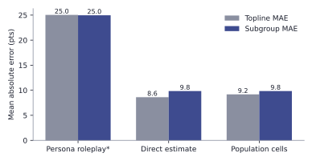
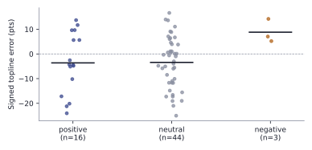
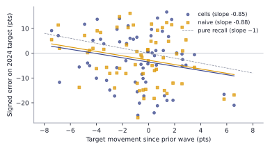
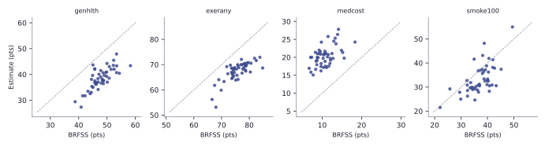

What does post-stratifying language-model predictions buy? A registered three-arm evaluation against 63 survey items
Simulated survey respondents built by role-playing language models one persona at a time are widely marketed and widely distrusted. We evaluate an estimator that never simulates an individual: partition a census-calibrated synthetic population into demographic cells, elicit each cell’s response distribution from a language model acting as an expert predictor, and aggregate with calibrated population weights — post-stratification with an LLM-elicited cell response model. Against a pre-registered 63-item anchor bank from the 2024 General Social Survey and the Federal Reserve’s 2024 Survey of Household Economics and Decisionmaking, matched-budget persona role-play misses by roughly 25 points; cell-based estimation and direct expert estimation land near 9-10 points, and the registered hypothesis that cells beat direct estimation on subgroup margins fails — the paired difference is near zero. In exploratory comparisons, cells tend to order subgroups better than independent direct asks (one-sided p = .04, with a confidence interval marginally spanning zero) and preserve coherence and composability on the frame’s base dimensions; a battery of referee-driven robustness checks — instrument-corrected re-elicitation, replicate runs, option-order and paraphrase probes, a cell-granularity ablation, and a contamination regression against 2022/2023 anchor waves — bounds how far those claims travel. Prediction-powered inference with 200-person human anchors attains nominal coverage in a resampling study (asymptotic validity, not field validity) with no interval-width gains at demographic granularity, a substantive null about where demographic conditioning runs out. State-level validation against BRFSS 2023 shows the estimator ranks states well but does not beat a national-constant baseline on pooled error. We release the estimator, anchor banks, per-call elicitation logs for all revision-stage arms, and the evaluation harness; the public product renders its benchmark page from the same artifacts this paper reports.
1 Introduction
Whether large language models can stand in for human survey respondents is among the most contested questions in survey research. Commercial “synthetic respondent” products have proliferated, while the field’s institutions urge caution: the American Association for Public Opinion Research’s 2026 task force classifies synthetic samples as the riskiest integration of AI into survey work (American Association for Public Opinion Research 2026), and the ICC/ESOMAR code requires that simulated respondents never be presented as measurements of real people (ICC/ESOMAR 2025). The research literature has converged on a diagnosis: role-playing one simulated respondent per model call — the dominant commercial architecture — compresses within-group variance, misportrays identity groups, and is unstable under prompt perturbation (Bisbee et al. 2024; Wang et al. 2025; Santurkar et al. 2023; Boelaert et al. 2025), even as the same models demonstrably carry substantial distributional knowledge about public opinion (Argyle et al. 2023; Meister et al. 2024; Gong et al. 2026; Kim and Lee 2024).
This paper evaluates an estimator built around that diagnosis rather than against it. The design treats the language model not as a subject but as a conditional response model over population cells, grounded in a calibrated synthetic population rather than prompt-invented personas:
- Population frame. A synthetic population of 4.2 million adult records derived from the Current Population Survey (U.S. Census Bureau and U.S. Bureau of Labor Statistics 2024), with calibrated weights and state and congressional-district assignment, partitioned into 149 post-stratification cells (age band, personal earned-income band, sex; cells holding at least 0.25% of population weight are further split by housing tenure, children at home, means-tested benefit receipt, and Social Security receipt).
- Distribution elicitation. For each cell, the model is asked once, in an expert-predictor frame (Anthis et al. 2025), for the percentage of that group choosing each response option — verbalized distributions rather than sampled individuals, following head-to-head evidence that direct distribution elicitation dominates simulate-then-count (Gong et al. 2026; Meister et al. 2024).
- Weighted aggregation. Cell distributions combine with calibrated population weights — the post-stratification arithmetic long used in survey inference (Gelman and Little 1997; Park et al. 2004). We emphasize what this is not: there is no multilevel regression, no partial pooling, and no model-based shrinkage for sparse cells, so we do not call the method MRP. It is post-stratification with an LLM-elicited cell response model; MRP’s hierarchical regularization is a natural comparison and possible extension, not the method’s name.
Proof-of-concept hybrids exist (Cerina and Duch 2023), fine-tuned LLM-to-survey prediction is developing quickly (Kim and Lee 2024; Suh et al. 2025), and open tooling for LLM surveys is maturing (Expected Parrot, Inc. 2024; Horton 2023) — but registered evaluations with disclosed misses remain rare (Morris et al. 2025; Röttger et al. 2024).
Our contributions: (i) a pre-registered, 63-item evaluation against GSS 2024 and SHED 2024 human targets comparing the cell estimator to matched-budget persona role-play and to direct model estimation — including the registered hypothesis this design failed: on marginal subgroup accuracy, cells tie rather than beat per-subgroup direct estimation; (ii) a referee-driven robustness program, registered as an addendum before execution: instrument-corrected re-elicitation (verbatim wordings, volunteered-category handling, an explicit item-nonresponse instruction), replicate runs, option-order and paraphrase probes (Tjuatja et al. 2024; Dominguez-Olmedo et al. 2024), a cell-granularity ablation, and a contamination regression against earlier anchor waves; (iii) a prediction-powered inference evaluation (Angelopoulos et al. 2023; Krsteski et al. 2025; Broska et al. 2025) showing nominal coverage from small human anchors in a resampling design, with no interval-width gains at either of two demographic granularities; (iv) a state-level small-area validation against BRFSS 2023 (Centers for Disease Control and Prevention 2024); and (v) a fully documented harness in which the production system’s public benchmark page and this paper render from the same artifacts, with per-call elicitation logs released for every revision-stage arm.
3 Method
3.1 Estimand
The estimator targets, for a defined population and a specific survey instrument, the response distribution that the instrument would measure: formally, the weighted distribution survey \(S\) would record for question \(q\) with its option set, administered as \(S\) administers it. Human targets in this study embed each survey’s mode and house effects — GSS 2024 is a mixed-mode (in-person and web) probability survey, SHED an online probability panel, BRFSS a telephone survey — and the language model is not told the mode. Reported “error” therefore includes any gap between the model’s implicit measurement context and each survey’s actual one, a floor we cannot separate from model error without cross-mode anchors; we state per source which mode generated the targets, and note that self-rated health appears in both GSS (4-point, mixed-mode) and BRFSS (5-point, telephone) — a wording-and-mode contrast we exploit descriptively in the small-area section. Because human targets drop item nonresponse, the estimand is conditional on giving a substantive answer; the revision-stage elicitation states this conditioning explicitly, and per-item nonresponse rates appear in the appendix.
3.2 Population frame and cells
The frame reduces to 149 national cells covering 100% of population weight: 40 base cells (age band × earned-income band × sex) and 109 detailed cells carrying tenure, children, means-tested benefits, and Social Security receipt. Detailed cells hold 80.7% of population weight; the remaining 19.3% sits in base cells with no detailed attributes. Two consequences, disclosed wherever they bind: subgroup estimates on detailed dimensions (tenure, children, benefits) cover only the detailed share of the audience, so their weighted average does not mechanically equal the topline — coherence is guaranteed only for age, income, and sex; and composed audiences filtering on detailed dimensions exclude the base-cell weight, non-randomly. The 0.25% refinement threshold and band cutpoints are analyst choices without registered sensitivity analysis; the granularity ablation below examines the coarser end of the spectrum, and finer schemes (education and race/ethnicity are notable omissions from the conditioning set) are future work.
3.3 Elicitation
Each cell receives one call: an expert-survey-methodologist system prompt (not role-play), the survey question, the response options, and a request for integer percentages summing to 100 as JSON. Malformed responses are dropped and counted (never imputed); parsed responses that do not sum to 100 are renormalized. In the registered v1 runs the elicitation was not seeded or temperature-controlled — no such parameter is sent to the APIs; the study’s seed governs only persona-arm record sampling. Model outputs are therefore nondeterministic draws; the revision adds three replicate runs to measure run-to-run variance, and reproducibility rests on released per-call logs rather than on determinism. Primary model: gpt-5-mini (reasoning effort minimal); variants gpt-5.2 (reasoning effort none — a configuration difference noted where compared) and claude-haiku-4.5.
3.4 Aggregation and provenance
The population estimate for option \(k\) is \(\hat\theta_k = \sum_c w_c \, \hat p_{ck} / \sum_c w_c\); subgroup estimates restrict the sum to matching cells. Failed cells drop with their weight — an implicit missing-at-random reweighting whose incidence we report (one failed cell in 9,386 registered-run calls). Every run records engine, prompt, and dataset versions, model, seed, cell counts, failures, and weighted audience.
4 Evaluation design
Two registration stages. Stage 1 (PAP v2; repository tag pap-v2, commit f93e00b): the 63-item bank — 52 GSS 2024 items retained under an a priori \(n \ge 600\) rule and 11 SHED 2024 items — with weighted topline and subgroup targets (age band and sex for both surveys; household income band and housing tenure for SHED), arms, metrics, and hypotheses H1-H5, committed before any elicitation. Stage 2 (PAP v3 addendum; tag pap-v3-addendum, commit 5c301b6): after referee review identified instrument-fidelity gaps, a corrected bank v2 and a robustness program were registered before the v4 runs they specify. Registration is by public commit in the authors’ repository — an ordering artifact auditable against run timestamps and per-call logs, not third-party timestamping; future studies will deposit externally.
The four pilot SHED items sit inside the confirmatory bank and the 20-item subset (a design flaw the addendum addresses with a pilot-overlap sensitivity, reported below). Instrument-fidelity issues in bank v1 — adapted rather than verbatim wordings on several GSS items, normally volunteered response categories offered as explicit options on six items, no item-nonresponse instruction, and two SHED items rendered from derived variables — are catalogued per item in Appendix A and corrected in bank v2; the SHED income slices remain household income against the frame’s personal earned-income bands, a construct mismatch that is asymmetric in the direct arm’s favor (its subgroup prompts use the construct-correct household wording), which is why the family-disaggregated H1 below treats age and sex as the primary confirmatory pooling.
Arms: cells (149 calls/item), direct (one whole-audience estimate plus one per reported subgroup; both arms share the expert system prompt), and persona (one role-play call per weighted-sampled microdata record, \(n{=}150\)/item, on the pre-registered 20-item subset). The subset’s composition — 12 GSS, 8 SHED — overweights SHED relative to the bank (17.5%), a fact that matters for the persona comparison because SHED hardship items are where role-play dramatizes most; persona error is therefore also reported by source. Primary metric: absolute error of the designated positive-option share, pooled over items (topline) and subgroup bins (subgroup). The registered secondary metric, total-variation distance between full distributions, is reported alongside. Rank structure is measured as within-item Spearman correlation; the registered H5 statistic pooled heterogeneous slice families and is retained for the record, with an age-family-only version (the one family present in every item) as the cleaner statistic. Items where an arm’s constant estimates make the correlation undefined are excluded from that arm’s median (counts disclosed); a sensitivity treating them as zero discrimination appears in the artifact.
5 Results: registered evaluation
5.1 Pilot
On the four-item SHED pilot at matched budget, persona role-play reached 36.6 points topline MAE and 23.0 subgroup MAE, against 17.0 and 6.2 for cells — and, disclosed for completeness, 9.4 and 6.8 for the direct arm, which beat cells on pilot toplines. The pilot’s four hardship-heavy items are not representative of the bank (cells’ pilot topline error of 17.0 points fell to 9.2 on the full bank); the persona failure is qualitative — role-played low-income personas dramatized hardship, with 75.9% reporting serious housing-cost hardship versus 18.7% of real respondents (both figures in the committed pilot artifact).
5.2 Main comparison
| Method | Topline MAE | Subgroup MAE | Topline TV |
|---|---|---|---|
| Persona role-play | 25.0 | 25.0 | — |
| Direct estimate | 8.6 | 9.8 | 11.5 |
| Population cells | 9.2 | 9.8 | 11.7 |

- H1 (registered, confirmatory): cells beat direct on subgroup margins — fails. Pooled subgroup MAE 9.8 vs 9.8 points over 63 items; paired mean difference +0.00 points (95% bootstrap CI [-0.79, 0.79]; one-sided Wilcoxon p = 0.51). Equivalence within ±1.5 points is supported by TOST at the 5% level — a demonstrated tie, not merely a null.
- By slice family: age — cells 10.3 vs direct 10.1; sex — 9.3 vs 9.3; household income (construct-mismatched for cells only) — 9.8 vs 10.1; tenure (cells cover the detailed 80.7% of weight) — 9.8 vs 9.8.
- Toplines: direct 8.6 vs cells 9.2 points (paired difference +0.56, 95% CI [-0.60, 1.67]) — direct estimation is directionally better on famous marginals (the interval includes zero), exactly where training-data recall is most plausible (see the contamination test).
- H2/H3 (persona): on the 20-item subset, persona subgroup MAE 25.0 vs cells 10.1; topline 25.0 vs 10.1. By source, persona topline MAE is 22.4 on GSS items and 29.0 on SHED items — the failure is general, not a SHED-composition artifact. The persona sampling floor at n=150 (expected MAE 2.9 points from binomial noise alone) explains only a small fraction of it.
- H5 (registered): median pooled-family Spearman \(\ge 0.80\) — fails at 0.62. Exploratory: on the age family alone, cells reach median \(\rho\) = 0.80 (n = 63 items) vs direct 0.60 (n = 63); the paired difference is +0.08 (95% CI [-0.01, 0.17], one-sided Wilcoxon p = 0.040). This comparison was not pre-registered and is labeled exploratory wherever it appears, including the abstract.
Persona role-play — the dominant commercial architecture — is not competitive at any level. Between the two viable methods, marginal accuracy is a demonstrated tie under the equivalence bound; what distinguishes them is structural. Cells produce subgroup systems that cohere with the topline by construction (on the base dimensions), order subgroups better in the exploratory comparison above, compose into arbitrary audience definitions from one auditable prediction set — where direct estimation needs a fresh unverifiable call per audience — and expose per-cell predictions that valid-inference machinery consumes. The price appears in the cost table below.
5.3 Sensitivities
Excluding the four pilot-overlapping items: cells 9.1/9.8, direct 8.8/9.9 (59 items) — conclusions unchanged. Excluding the six items with volunteered categories: cells 8.7/9.4, direct 8.2/9.2. Restricting subgroup MAE to bins with n \(\ge\) 100 human respondents: cells 9.8, direct 9.8. Excluding the 15 items with nonresponse above 50% (where the conditional estimand covers a minority of eligible respondents): cells 8.6/9.2, direct 8.2/9.2. Human-target sampling noise is not negligible at bin level: under design-effect assumptions (GSS 1.5, SHED 1.2), the expected MAE floor from target noise alone is 0.9 points on toplines and 1.6 on subgroup bins (1.6 for bins with n \(\ge\) 100) — a floor all arms share.
6 Results: instrument-corrected robustness (registered addendum)
Re-eliciting the full bank with corrected instruments (verbatim wordings, volunteered categories marked as not read to respondents, an explicit conditional-on-substantive-answer instruction): cells 9.3/10.0 points, direct 8.7/9.7 — the registered-run conclusions are robust to the instrument corrections (registered v1: cells 9.2/9.8, direct 8.6/9.8). The persona arm was not re-elicited: the measured instrument effects (at most a few points) cannot plausibly account for its 25-point gap.
Across 4 independent runs of the 20-item subset, between-run SD of pooled MAEs is 0.07 points topline / 0.05 subgroup for the cells arm and 0.62 / 0.27 for the direct arm — cells’ run noise is negligible, and the direct arm’s exceeds its own topline advantage over cells (+0.56 points), which is itself evidence for the marginal-accuracy tie. Paraphrasing question stems moves item toplines by only 1.2 points on average (max 4.8; n = 10) — semantic-preserving rewording is a second-order perturbation at cell aggregation. Reversing option order is not second-order: it moves cells toplines by 3.5 points on average (max 7.6; n = 20) and direct toplines by 5.5 (max 18.0) — roughly a third of total topline error, the largest instrument sensitivity we measured, shared by both arms, and consistent with the LLM response-order artifacts documented by Tjuatja et al. (2024) and Dominguez-Olmedo et al. (2024). Canonical instrument order (which our default runs use, matching what humans saw) is load-bearing, and order sensitivity belongs in any accuracy claim’s error budget.
Volunteered categories. In the registered v1 instrument, which offered normally-volunteered options as explicit choices, the model over-allocated mass to them on every affected item (points vs humans: trust +5.9, fair +7.2, helpful +5.0, getahead +9.0, courts +10.6, divlaw +14.7). Marking those options as “not read to respondents” in v4 removes much of the artifact (trust -1.7, fair -1.7, helpful -6.1, getahead -2.4, courts +7.4, divlaw +8.3; courts and divlaw retain sizable shifts) — a measured, referee-identified instrument effect and its measured correction. The no-volunteered variant appears in the released artifact.
6.1 Cell granularity
| Cells | Topline MAE | Median age-family Spearman |
|---|---|---|
| 1 | 8.3 | — |
| 8 | 8.9 | 0.40 |
| 40 | 9.2 | 0.80 |
| 149 | 9.3 | 0.80 |
The granularity curve locates where structure emerges — and where accuracy does not. Toplines are best with a single cell and degrade mildly as composition error accumulates across finer tables: granularity is a small tax on marginal accuracy, the ablation’s version of the H1 tie. Rank structure behaves differently: encoding the reporting dimension is not sufficient (age \(\times\) sex cells rank age bands at only \(\rho = 0.40\)); ordering sharpens to 0.80 once the interacting income conditioning arrives at 40 cells, and holds at 149 despite each cell receiving no pooling. The 149-cell premium over 40 buys neither marginal accuracy nor age-ordering — it buys composability: only the detailed table supports the tenure/children/benefits audiences the estimator exists to serve.
7 Results: error structure

Signed topline error averages -3.6 points on positive-valence items (n=16, SD 12.4), -3.4 on neutral items (n=44), and 8.8 on negative-valence items (n=3). The registered H4 contrast (positive vs negative) is -12.4 points with permutation p = 0.070 — not established: the negative class has three items, two of them derived or composite instruments whose format confounds point the same direction, and neutral items shift almost as far as positive ones, implicating option-position and extremity artifacts rather than valence per se (first-listed-positive regression coefficient 7.4 points). We report the pattern as hypothesis-generating; an adequately powered negative class on native instruments is registered future work.
7.1 Contamination
An estimator anchored to its training window — whether by recalling published statistics or by genuine but frozen knowledge — cannot track target movement after that window, so its signed error on 2024 targets should run at slope −1 against each item’s movement since the prior anchor wave (GSS 2022, SHED 2023). Observed: cells slope -0.85 (SE 0.49, r = -0.22, n = 63, p = 0.09); direct slope -0.88 (SE 0.45, r = -0.24). Point estimates sit near the anchoring line for both arms, with wide uncertainty — these evergreen items moved only 2.2 points on average, so the test has little leverage and the slopes are statistically distinguishable from neither −1 nor, marginally, 0. Three sober conclusions: the pattern is consistent with training-window anchoring and affects both arms equally; on items this stable, staleness costs at most about two points; and the regression cannot separate frozen knowledge from recall of published values. Documented cutoffs sharpen this: gpt-5-mini’s knowledge cutoff (May 31, 2024) predates every 2024 target’s release, so the primary model cannot have seen the 2024 values at all — only earlier waves, which is precisely what the regression tests; gpt-5.2 (August 31, 2025) and claude-haiku-4.5 (February 2025) postdate the SHED 2024 report, so their variant runs carry a recall exposure the primary runs do not. Freshly fielded items remain the decisive test and are registered follow-up, where an open-weights model with an auditable corpus will be included.

8 Valid inference from small human anchors
Treating each anchor survey as its population and redrawing weighted \(n{=}200\) anchors 500 times per item: PPI rectification (Angelopoulos et al. 2023) attains 94.7% mean coverage of the full-sample target against a nominal (asymptotic) 95% — within the registered band — while the human-anchor-only interval covers at 94.9%. This is a resampling study: anchors are idealized self-weighting draws from the survey itself, so the result verifies the estimator’s arithmetic under clean conditions, not field validity under real designs and nonresponse. The registered efficiency criterion (median width ratio below 1) is technically met at 0.998, but the gain is negligible — PPI intervals are narrower on only 57% of items.
Enriching the predictor from age × sex to age × sex × tenure (the richest covariate shared by frame and anchors; household income is not a frame conditioning variable, a disclosed deviation from the addendum’s phrasing) changes nothing: coverage 94.6%, median width ratio 1.001, narrower on 44% of items. PPI’s width gain scales with the individual-level variance the predictor explains, and demographic-cell predictions explain little of it on attitude items at either granularity — group-level signal is not individual-level signal. Validity comes cheap; precision gains await predictors of individual responses (fine-tuned response models (Suh et al. 2025; Krsteski et al. 2025), interview-grounded agents (Park et al. 2024)), not richer demographic conditioning. This is the paper’s most decision-relevant null.
9 Context: the in-survey demographic ceiling
A gradient-boosted classifier trained on each anchor survey’s own respondents (demographics only, 80/20 split) reaches 1.7 points subgroup MAE — the in-survey ceiling for demographic-composition prediction, achievable only with the human data the LLM arms never see (Miranda and Balbi 2025). (Its topline figure of 1.0 points is close to mechanical — a classifier fit on 80% of a survey recovers that survey’s base rates — and is not a meaningful benchmark.) The gap between the subgroup ceiling and the cells arm is the price of operating without fielded data; the gap between cells and persona is pure architecture.
10 Small-area transfer: BRFSS across states
Across four full-sample BRFSS 2023 items estimated for every participating jurisdiction (48 states plus the District of Columbia; Kentucky and Pennsylvania did not meet BRFSS 2023 collection requirements), state-level cells estimation — age × sex cells from each state’s calibrated table, a deliberately reduced frame for cost — reaches 8.1 points MAE, versus 9.7 for one direct estimate per state and 7.8 for applying the national estimate uniformly. Cells do not beat the national-constant baseline pooled: the paired difference is +0.30 points (95% bootstrap CI over state-items [-0.30, 0.90]). Median within-item Spearman across states is 0.66 (Figure 4).

The right yardstick matters: these items vary modestly across states, state targets at \(n \ge 300\) with BRFSS design effects carry several points of sampling noise themselves, and the shrinkage limit (the national constant) is therefore hard to beat on pooled error. The self-rated-health contrast promised in the estimand section illustrates the instrument-and-mode floor directly: the same construct yields a 72.2% excellent-or-good share on the GSS’s four-point mixed-mode item and a 47.2% excellent-or-very-good share on BRFSS’s five-point telephone item — instrument and mode differences of the same order as the errors under study, which is why every target in this paper is defined relative to a named instrument. The estimator’s genuine small-area signal is ordinal — it ranks states at median \(\\rho\) = 0.66 from composition plus the state’s name — and where state effects are compositional (smoking history, exercise) it captures them, while contextual effects beyond demographics (health-care affordability) defeat an age × sex frame. The full-frame state experiment is registered future work.
11 Model variants
none versus gpt-5-mini’s minimal — a configuration as well as capability difference. Variants were run for the cells arm only, so nothing here speaks to whether the cells-versus-direct tie persists with model capability.
| Cells arm model | Topline MAE | Subgroup MAE |
|---|---|---|
| anthropic:claude-haiku-4-5-20251001 | 8.4 | 9.8 |
| openai:gpt-5-mini | 10.1 | 10.1 |
| openai:gpt-5.2 | 7.4 | 8.5 |
12 Cost
| Arm | Calls per item | USD per item (gpt-5-mini) |
|---|---|---|
| cells | 149 | 0.017 |
| naive | 9.7 | 0.001 |
| persona | 150 | 0.018 |
13 Limitations
Contamination. The delta regression bounds stale-value recall but cannot exclude recall of the 2024 targets themselves (GSS 2024 microdata released fall 2025; SHED 2024 May 2025; published toplines circulate earlier). Freshly fielded items on a verified human panel remain the decisive test and are registered follow-up.
Measurement. The estimand is conditional on each survey’s instrument and mode, which the model is not told; the target-noise floors reported above are shared by all arms but the mode gap is not separately identifiable here. Construct mismatches (household versus earned income) and the frame’s omitted conditioning variables (education, race/ethnicity) are disclosed design limits.
Scope. Evergreen attitude and finance items on US adults; nothing here speaks to fast-moving topics (a frozen model cannot track post-cutoff opinion change), to small or marginalized subgroups below the \(n \ge 30\) reporting floor, or to non-US populations. Persona results characterize one standard role-play implementation at one budget.
Inference. The PPI study is a resampling design, not a field validation; registration is by public commit, verifiable as ordering but not third-party-timestamped (annotated tags were attached at revision time, after their target commits; ordering is additionally auditable from provider response IDs and timestamps in the per-call logs); and the pilot-overlap and subset-composition flaws of the original design, while addressed by sensitivity analyses, should not recur in follow-ups.
14 Discussion
The synthetic-respondent debate has largely been conducted over the wrong architecture — cells, not personas, is the field-facing summary of our harshest result. Role-playing individuals is both the dominant commercial pattern and the design the evidence most clearly condemns; our matched-budget replication puts the gap at roughly fifteen points of MAE against either alternative, in both survey sources. Treating the model as a conditional response model over a calibrated population frame changes the question from “can an LLM impersonate a person?” to “how well does an LLM know conditional response distributions?” — a question that admits measurement, equivalence testing, and valid inference.
Against our own registration, cells did not beat direct per-subgroup estimation on marginal accuracy; the revision’s equivalence test upgrades that null to a demonstrated tie within ±1.5 points on subgroup margins (toplines pass equivalence only in the corrected v4 run). Three things follow. First, on well-surveyed margins, elaborate machinery buys no marginal accuracy over simply asking the model — a deflationary finding vendors are unlikely to publish, and one that direct estimation’s order-of-magnitude cost advantage sharpens. Second, the machinery still earns its keep where direct asking structurally cannot go: coherent and composable subgroup systems, auditable provenance, cell-level outputs that make prediction-powered validity possible, and (exploratorily) better subgroup ordering. Third, the residual error is structured, not noisy — replicate SDs are two orders of magnitude below the error itself, paraphrase effects are second-order, and the two systematic components we can name (option-order sensitivity of a few points; training-window anchoring bounded by target movement) are exactly what instrument discipline and anchor-based correction methods target (Kambhatla et al. 2026; Krsteski et al. 2025). The honest path — publish the misses, anchor with small human samples, never imply real people were surveyed (ICC/ESOMAR 2025; American Association for Public Opinion Research 2026) — is also the technically correct one.
All code, prompts, cell tables, registered and revision-stage artifacts, per-call elicitation logs for every revision arm, and this manuscript’s source are public (Ghenis 2026a); the production system’s benchmark page renders from the same artifacts. Registered-run persona and direct per-call logs were not persisted by the original runner (only aggregates and the cells arm’s parsed predictions survive), a release gap the revision runner closes for all subsequent runs.
Data availability
GSS microdata are available from NORC under terms that do not permit redistribution; this repository ships weighted aggregates only, with exact acquisition instructions, file versions, and checksums in its DATA.md. SHED (Federal Reserve Board) and BRFSS (CDC) are public downloads. The synthetic population frame is pinned to a public Hugging Face revision; the derived cell tables the analyses consume are committed. Respondent-level extracts are regenerated locally by the released builders and never redistributed.
Acknowledgments
Drafting, engineering, and analysis assistance from Claude (Anthropic). Population frame built on the Populace calibrated-microdata stack. Human targets derive from public data of NORC’s General Social Survey, the Federal Reserve Board’s SHED, and CDC’s BRFSS; all interpretations are the author’s. Four simulated referee reviews, generated with independent model instances instructed to verify claims against the repository, motivated the v3 addendum’s corrections; the review transcripts are preserved in the repository history.
Appendix A: instrument fidelity
| Item | Source | Instrument notes | Nonresponse rate |
|---|---|---|---|
| gss_happy | gss2024 | — | 0.8 |
| gss_health | gss2024 | — | 0.3 |
| gss_satfin | gss2024 | — | 0.5 |
| gss_finrela | gss2024 | — | 1.0 |
| gss_getahead | gss2024 | volunteered option(s) | 70.0 |
| gss_class | gss2024 | — | 1.1 |
| gss_fear | gss2024 | — | 32.8 |
| gss_cappun | gss2024 | — | 37.2 |
| gss_gunlaw | gss2024 | — | 33.9 |
| gss_grass | gss2024 | — | 73.6 |
| gss_courts | gss2024 | volunteered option(s) | 75.5 |
| gss_trust | gss2024 | volunteered option(s) | 71.2 |
| gss_fair | gss2024 | volunteered option(s) | 71.4 |
| gss_helpful | gss2024 | volunteered option(s) | 71.4 |
| gss_satjob | gss2024 | restricted universe | 31.9 |
| gss_spanking | gss2024 | — | 35.6 |
| gss_sexeduc | gss2024 | volunteered option(s) | 35.5 |
| gss_divlaw | gss2024 | volunteered option(s) | 72.5 |
| gss_fepol | gss2024 | — | 72.8 |
| gss_fefam | gss2024 | — | 34.7 |
| gss_fechld | gss2024 | — | 34.5 |
| gss_fepresch | gss2024 | — | 34.9 |
| gss_helppoor | gss2024 | — | 35.4 |
| gss_helpsick | gss2024 | — | 35.1 |
| gss_helpnot | gss2024 | — | 36.0 |
| gss_eqwlth | gss2024 | — | 34.5 |
| gss_polviews | gss2024 | — | 4.2 |
| gss_confinan | gss2024 | — | 34.4 |
| gss_conbus | gss2024 | — | 35.0 |
| gss_coneduc | gss2024 | — | 34.4 |
| gss_conpress | gss2024 | — | 35.0 |
| gss_conmedic | gss2024 | — | 34.5 |
| gss_conarmy | gss2024 | — | 34.7 |
| gss_confed | gss2024 | — | 35.0 |
| gss_conjudge | gss2024 | — | 34.9 |
| gss_consci | gss2024 | — | 35.6 |
| gss_conlegis | gss2024 | — | 34.9 |
| gss_natspac | gss2024 | — | 51.9 |
| gss_natenvir | gss2024 | — | 50.0 |
| gss_natheal | gss2024 | — | 50.0 |
| gss_natcity | gss2024 | — | 51.6 |
| gss_natcrime | gss2024 | — | 50.1 |
| gss_natdrug | gss2024 | — | 50.2 |
| gss_nateduc | gss2024 | — | 49.4 |
| gss_natarms | gss2024 | — | 50.5 |
| gss_nataid | gss2024 | — | 50.7 |
| gss_natfare | gss2024 | — | 50.3 |
| gss_natroad | gss2024 | — | 1.9 |
| gss_natsoc | gss2024 | — | 3.2 |
| gss_natchld | gss2024 | — | 3.5 |
| gss_natsci | gss2024 | — | 5.0 |
| gss_natenrgy | gss2024 | — | 3.8 |
| shed_b2 | shed2024 | — | 0.0 |
| shed_b3 | shed2024 | — | 0.0 |
| shed_400cash | shed2024 | derived | 0.0 |
| shed_ef1 | shed2024 | — | 0.0 |
| shed_ef2 | shed2024 | — | 0.0 |
| shed_ef7 | shed2024 | — | 0.0 |
| shed_bk1 | shed2024 | — | 0.0 |
| shed_bnpl | shed2024 | — | 0.0 |
| shed_work | shed2024 | — | 0.0 |
| shed_i41d | shed2024 | derived | 0.0 |
| shed_housing_stress | shed2024 | composite | — |